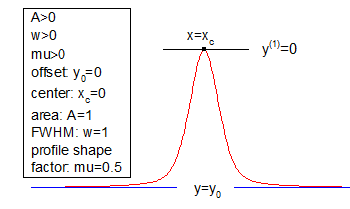

PsdVoigt1-FitFunc
Pseudo-Voigt 関数。Gaussian関数とLorentzian関数の線形結合

数: 5
名前: y0, xc, A, w, mu
意味: y0 = オフセット, xc = 中心, A = 面積, w = FWHM, mu = プロファイル形状係数
下側境界: w > 0.0
上側境界: なし
nlf_psdvoigt1(x,y0,xc,A,w,mu)
FITFUNC\PSDVGT1.FDF
Spectroscopy
![y=y_0+A\left[ m_u\frac 2\pi \frac w{4\left( x-x_c\right) ^2+w^2}+\left( 1-m_u\right) \frac{\sqrt{4\ln 2}}{\sqrt{\pi}w}e^{-\frac{4\ln 2}{w^2}\left( x-x_c\right) ^2}\right]](../images/PsdVoigt1/math-b15a9bdac19e7c5a86407478c56fb945.png "y=y_0+A\left[ m_u\frac 2\pi \frac w{4\left( x-x_c\right) ^2+w^2}+\left( 1-m_u\right) \frac{\sqrt{4\ln 2}}{\sqrt{\pi}w}e^{-\frac{4\ln 2}{w^2}\left( x-x_c\right) ^2}\right]")